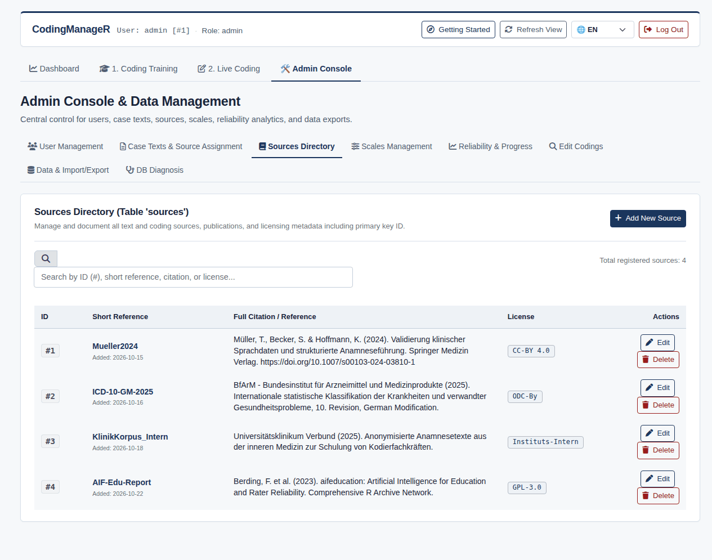
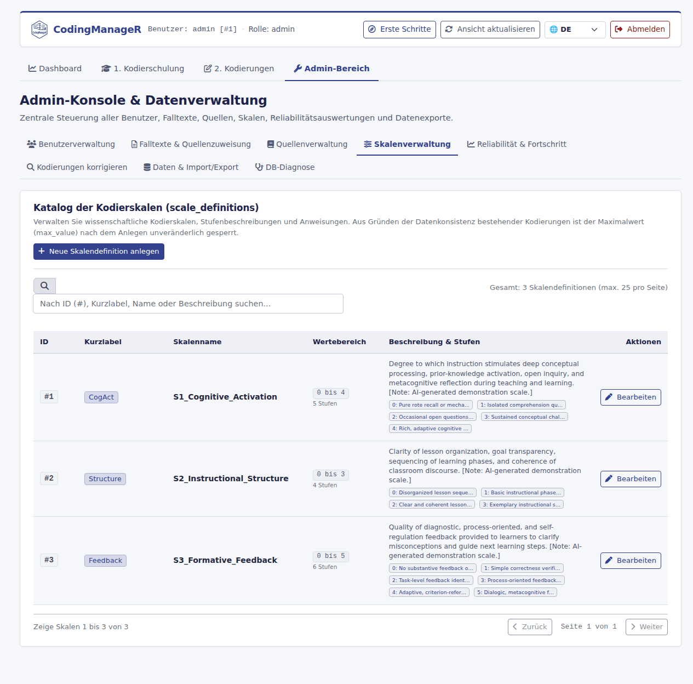
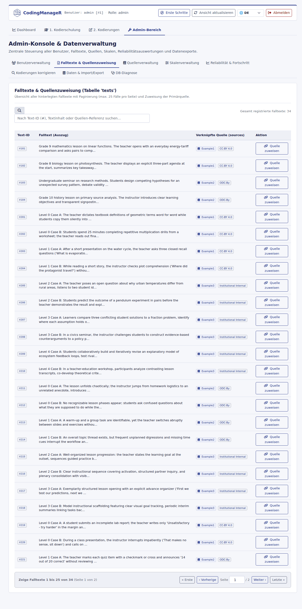
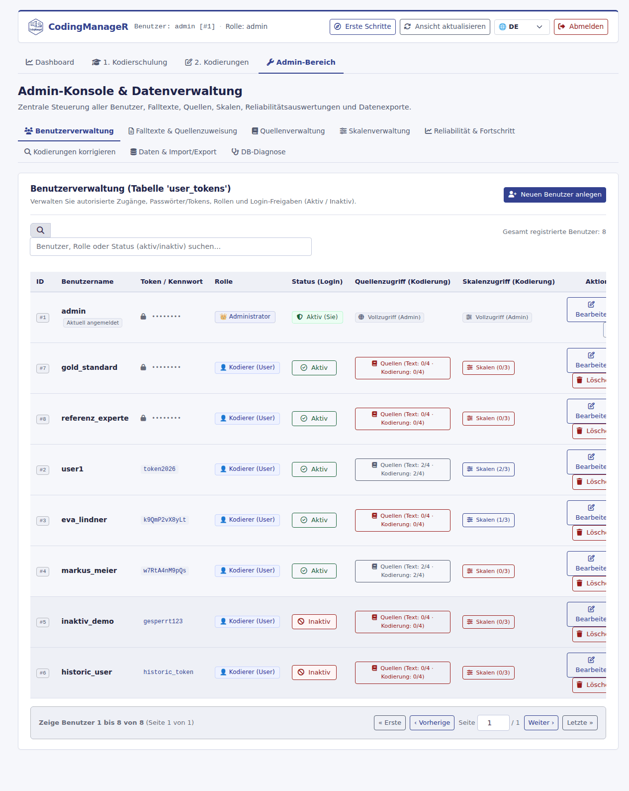
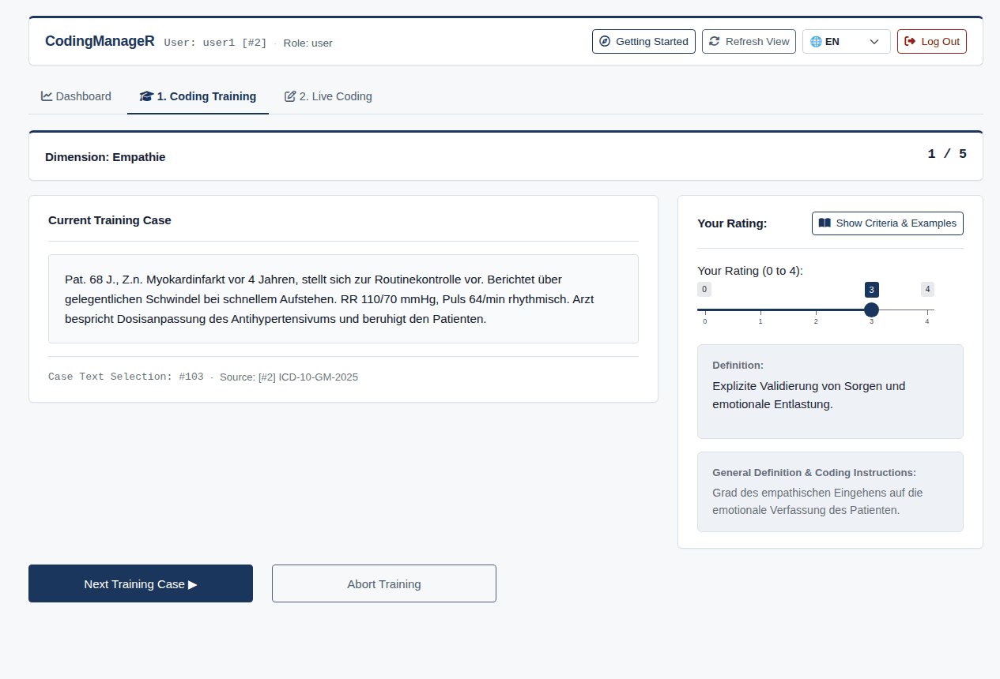
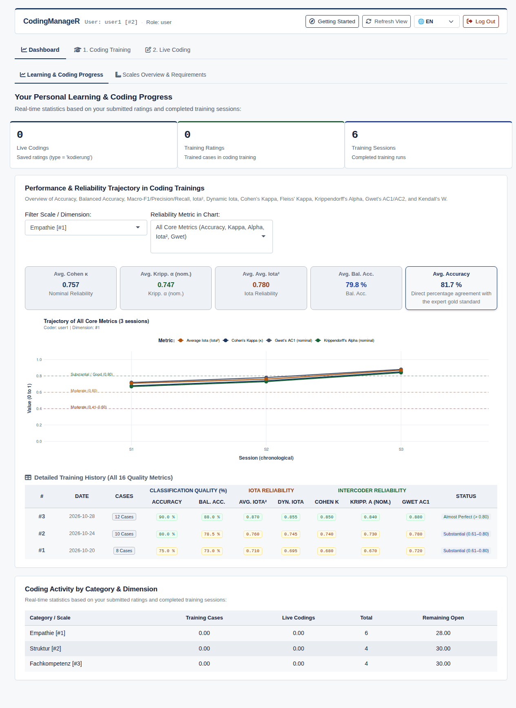
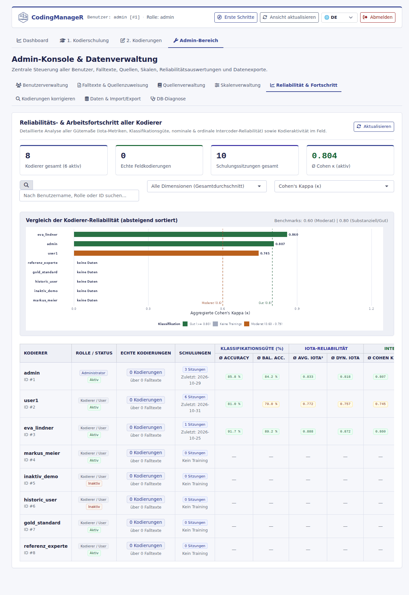
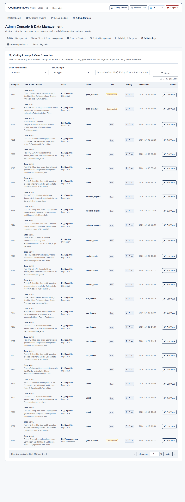
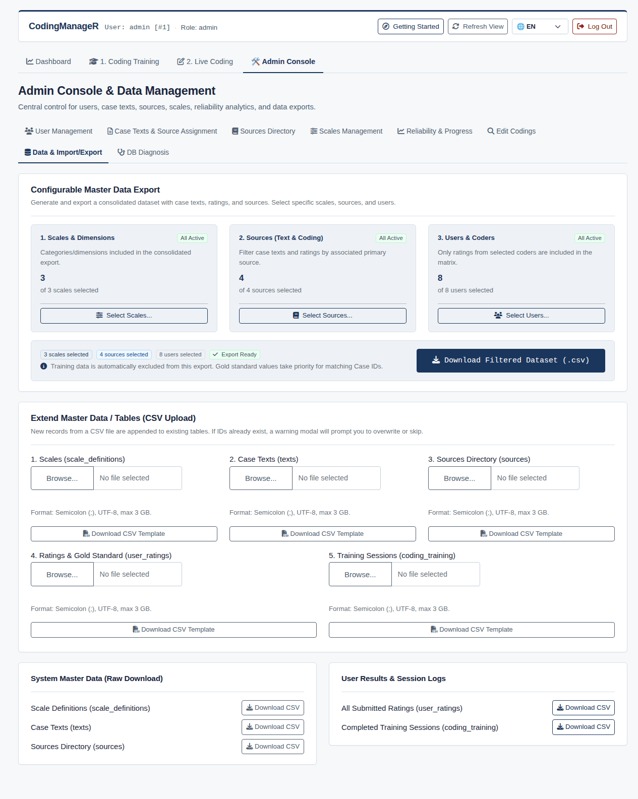
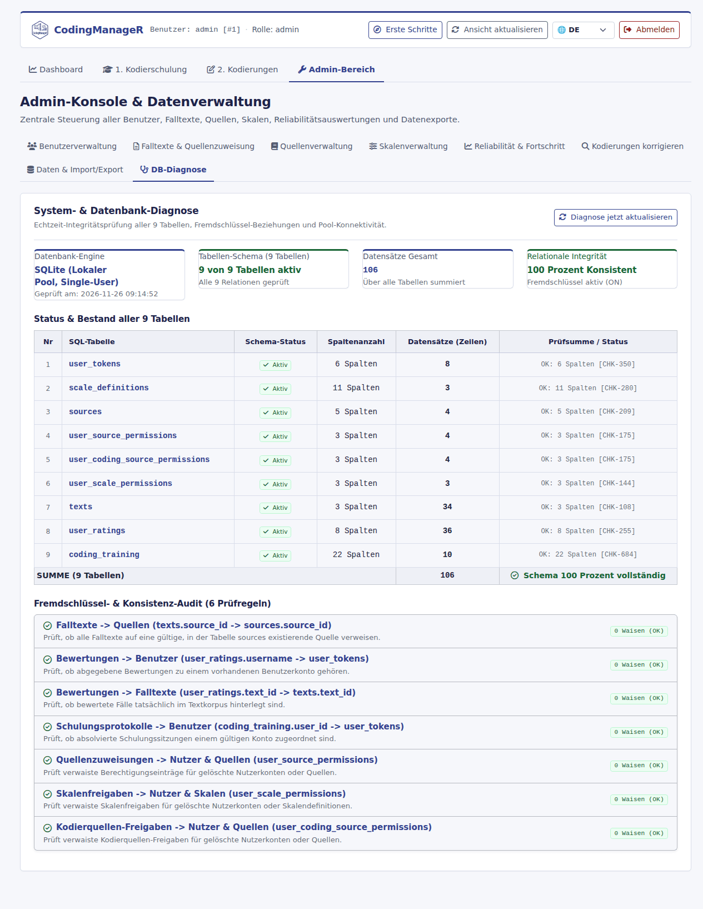

1 Willkommen
CodingManageR unterstützt Forschende, Lehrende und Studierende dabei, qualitative Textkodierprojekte direkt im Webbrowser durchzuführen. Nach dem Start der Anwendung sind keine R-Programmierkenntnisse mehr nötig: Projekte werden per Mausklick eingerichtet, Kodiererinnen und Kodierer strukturiert geschult und Bewertungen systematisch erfasst.
Diese Einführung folgt den drei zentralen Phasen eines Kodierprojekts:
| Teil | Schwerpunkt | Hauptzielgruppe |
|---|---|---|
| Teil 1: Erstmalige Einrichtung (Abschnitt 3) | Admin-Passwort ändern sowie Quellen, Kodierskalen und Falltexte anlegen | Projektleitung / Administration |
| Teil 2: Der Kodierprozess (Abschnitt 4) | Neue Benutzer anlegen, Kodierschulung absolvieren und Feldkodierungen erfassen | Projektleitung & Kodierende |
| Teil 3: Weitere Admin-Optionen (Abschnitt 5) | Team-Qualität prüfen, Kodierungen korrigieren, Daten exportieren, CSV-Dateien hochladen und Datenbank prüfen | Projektleitung / Administration |
Haben Sie CodingManageR noch nicht installiert? Lesen Sie zuerst die Installations- und Startanleitung:
vignette("CodingManageR-de", package = "CodingManageR")Englische Version verfügbar: Die englischsprachige Fassung dieser Einführung lässt sich über
vignette("introduction", package = "CodingManageR")öffnen.
Hinweis zur KI-gestützten Erstellung: Diese Vignette, der Quellcode des Pakets CodingManageR sowie alle integrierten Beispieldaten (Kodierskalen, Quellen und Falltexte) wurden mit Hilfe von KI erstellt.
2 Bevor Sie beginnen
2.1 Zentrale Begriffe kurz erklärt
Wenn Sie neu in der qualitativen Textkodierung sind, helfen diese sechs Begriffe bei der Orientierung in der Anwendung:
| Begriff in der App | Verständliche Bedeutung |
|---|---|
| Kodierskala (oder Dimension) | Eine Bewertungsregel mit geordneten ganzen Zahlen ab
0. Beispiel: 0 = nicht vorhanden,
1 = teilweise vorhanden, 2 = deutlich
ausgeprägt. |
| Falltext | Ein einzelner Textabschnitt, den eine kodierende Person liest und bewertet — etwa ein Unterrichtsprotokoll, ein Schüleraufsatz oder ein Reflexionsbericht. |
| Quelle | Eine bibliografische oder projektspezifische Herkunftsangabe für einen Falltext, eine Kodierskala bzw. ein Kodierhandbuch oder eine Bewertung selbst. Eine Textquelle dokumentiert, woher ein Falltext stammt. Eine Kodierungsquelle dokumentiert nicht nur die Herkunft von Skala, Leitfaden oder Studienprotokoll, sondern kann ebenso angeben, woher die Kodierung (Bewertung eines Textes) selbst stammt — zum Beispiel aus einer externen Studie, einem Expertenkonsens oder einem publizierten Benchmark-Datensatz. |
| Goldstandard (Referenzfall) | Ein Falltext mit abgestimmter Referenzbewertung. Zusammen mit weiteren bereits kodierten Fällen einer Kategorie dienen diese Referenzfälle als Übungsgrundlage zur Prüfung der Urteilsübereinstimmung in der Schulung. |
| Intercoder-Reliabilität | Ein statistisches Maß für die Übereinstimmung zwischen
Beurteilenden (kann zwei oder mehr Kodierende umfassen). In der
Kodierschulung von CodingManageR wird die Reliabilität nicht
ausschließlich anhand expliziter gold_standard-Einträge
berechnet, sondern über alle bereits kodierten Referenzfälle
einer Kategorie. |
| Zugangs-Token | Das persönliche Passwort, das zusammen mit dem Benutzernamen bei der Anmeldung eingegeben wird. |
2.2 Anwendung starten und Sprache umschalten
Um ein neues, leeres lokales Projekt auf Ihrem Computer zu starten, öffnen Sie R oder RStudio und führen folgenden Befehl aus:
CodingManageR::run_app_local(sqlite_path = "mein_projekt.sqlite")Wird CodingManageR an Ihrer Hochschule oder in Ihrem Team auf einem Server betrieben, öffnen Sie einfach den Weblink Ihrer Administration im Browser.
Schnell-Tipp — erst einmal ausprobieren? Testen Sie die Anwendung mit vorkonfigurierten Beispielskalen, Falltexten und Demokonten, bevor Sie Ihr eigenes Projekt aufbauen:
CodingManageR::run_app_local(sqlite_path = "demo_projekt.sqlite", empty = FALSE)
Mehrere lokale Projekte parallel verwalten? Im lokalen Modus speichert die App jedes Projekt in einer eigenen SQLite-Datei auf Ihrem Computer. Verwenden Sie pro Studie einen eigenen Dateinamen, etwa
CodingManageR::run_app_local(sqlite_path = "studie_a.sqlite")undCodingManageR::run_app_local(sqlite_path = "studie_b.sqlite"). Beenden Sie die App immer zuerst, bevor Sie eine.sqlite-Datei kopieren, umbenennen oder archivieren. Weitere Tipps zu Ordnern und Backups finden Sie invignette("CodingManageR-de", package = "CodingManageR").
Die Sprache der Oberfläche lässt sich jederzeit zwischen Deutsch und Englisch umschalten — sowohl direkt auf der Anmeldeseite als auch oben rechts in der Kopfleiste. Ihre laufende Arbeit bleibt beim Sprachwechsel vollständig erhalten.
2.3 Integrierte interaktive Einführung („Erste Schritte“)
Sie müssen diese Anleitung während der Arbeit nicht dauerhaft nebenher geöffnet lassen. Klicken Sie nach der Anmeldung oben rechts in der Kopfleiste auf Erste Schritte, um eine interaktive Schritt-für-Schritt-Tour direkt in der App zu starten:
- Rollenabhängige Pfade: Administratorinnen und Administratoren erhalten eine 3-teilige Tour mit 12 Schritten, die genau den Teilen 1, 2 und 3 dieser Vignette entspricht. Reguläre Kodiererinnen und Kodierer erhalten eine kompakte 4-Schritte-Tour für Teil 2 (Schulung, Dashboard und Feldkodierung).
- Automatische Navigation: Beim Klick auf „Weiter“ oder „Zurück“ hebt die Tour das jeweilige Bedienelement mit einem kurzen Hinweis hervor und wechselt automatisch in den passenden Reiter.
- Tastatur- und Live-Sprachunterstützung: Navigieren Sie mit den Pfeiltasten (Links/Rechts) zwischen den Schritten und schließen Sie die Tour mit Esc. Schalten Sie in der Kopfleiste zwischen Deutsch und Englisch um, werden alle Tour-Texte sofort mitübersetzt.
3 Teil 1: Erstmalige Einrichtung der Anwendung
Durchlaufen Sie für jedes neue Projekt die folgenden vier Schritte in genau dieser Reihenfolge: Quellen -> Skalen -> Falltexte. So stehen in allen Auswahlfeldern unmittelbar die passenden Einträge bereit.
3.1 Als Administrator anmelden und Standardpasswort ändern
- Öffnen Sie die Anmeldeansicht (siehe Abbildung 1) und geben Sie die
Standard-Zugangsdaten ein:
-
Benutzername:
admin -
Zugangs-Token:
geheim123
-
Benutzername:
- Klicken Sie auf Einloggen.
- Öffnen Sie in der oberen Navigationsleiste den Reiter Admin-Bereich. Sie befinden sich direkt im ersten Untertab Benutzerverwaltung.
- Klicken Sie neben
adminauf die Bearbeiten-Schaltfläche, ersetzen Siegeheim123durch ein starkes persönliches Passwort und speichern Sie die Änderung.
Warum dieser Schritt wichtig ist: Jede neu erstellte Datenbank beginnt mit demselben Standardpasswort. Ändern Sie es immer als Erstes, um Ihr Projekt abzusichern.

Abbildung 1: Anmeldeansicht mit Feldern für Benutzername und Zugangs-Token sowie der Sprachauswahl (Deutsch/Englisch) im Kartenkopf.
3.2 Schritt 1: Quellen anlegen („Quellenverwaltung“)
Bevor Sie Falltexte einspielen oder Kodierungen starten, legen Sie mindestens zwei Quellen an: eine Textquelle (Herkunft Ihrer Falltexte) sowie eine Kodierungsquelle (dokumentiert das Kodierhandbuch bzw. Studienprotokoll und/oder die Herkunft der Bewertungen selbst).
- Öffnen Sie im Admin-Bereich den Untertab Quellenverwaltung (siehe Abbildung 2).
- Klicken Sie auf Neue Quelle hinzufügen und füllen
Sie die drei Pflichtfelder aus:
-
Kurzreferenz (z. B.
Example1oderExample2): kompakter Bezeichner für Auswahlmenüs und Badges. - Vollständige Referenz / Zitation: vollständige bibliografische Angabe oder Projektbeschreibung.
-
Lizenz / Nutzungsrechte: wählen Sie eine
Standardlizenz (z. B.
CC-BY 4.0,CC0 1.0oderEigene Datenerhebung) oder geben Sie eine individuelle Lizenzbezeichnung ein.
-
Kurzreferenz (z. B.
- Klicken Sie auf Quelle speichern. Wiederholen Sie
den Vorgang für alle Textkorpora, Kodierleitfäden und externen
Bewertungsquellen Ihres Projekts. Merken Sie sich die numerische
IDaus der ersten Tabellenspalte — Sie benötigen diese alssource_idbeim CSV-Upload von Falltexten (siehe Abschnitt 3.4.1).
Viele Quellen bereits in einer Tabelle vorhanden? Sie können sämtliche Quellen auch gesammelt per CSV-Vorlage importieren (siehe Abschnitt 5.4).

Abbildung 2: Admin-Bereich — Quellenverwaltung zum Erfassen und Pflegen von Textkorpora, Zitationen und Lizenzen.
3.3 Schritt 2: Kodierskalen definieren („Skalenverwaltung“)
Legen Sie als Nächstes die Bewertungsskalen fest, mit denen Ihr Team arbeiten soll.
- Öffnen Sie im Admin-Bereich den Untertab Skalenverwaltung (siehe Abbildung 3).
- Klicken Sie auf Neue Skalendefinition anlegen und
füllen Sie folgende Felder aus:
-
Kurzlabel (z. B.
KogAktoderFeedback): kompakte Bezeichnung für Tabellen und Diagramme. - Skalenname: vollständiger Titel der Dimension für die Kodierenden.
- Allgemeine Definition & Kodieranweisung: kurze methodische Leitlinie, worauf beim Kodieren zu achten ist.
-
Maximaler Wert (
max_value): höchster Wert der Skala. Jede Skala beginnt bei0; beimax_value = 3entstehen beispielsweise vier Stufen (0,1,2,3). -
Stufenbeschreibungen (
0bismax_value): klare Definitionen und Ankerbeispiele für jede Stufe. Kodierende sehen diese Texte live, sobald sie den Bewertungsregler bewegen.
-
Kurzlabel (z. B.
- Klicken Sie auf Skalendefinition anlegen und wiederholen Sie den Vorgang für alle weiteren Skalen.
Wichtige Regel: Alle Textbeschreibungen lassen sich später jederzeit bearbeiten. Der
max_valueist jedoch nach dem Anlegen unveränderlich gesperrt, damit bestehende Kodierungen niemals ihre Bedeutung verlieren.

Abbildung 3: Admin-Bereich — Skalenverwaltung mit definierten ordinalen Kodierskalen, Wertebereichen und Stufenbeschreibungen.
3.4 Schritt 3: Falltexte hinzufügen und Quellen zuweisen
Im nächsten Schritt laden Sie Ihre Falltexte in die Datenbank und verknüpfen jeden Text mit seiner Textquelle.
3.4.1 Falltexte gesammelt per CSV hochladen (empfohlen)
Eine CSV-Datei ist eine einfache Texttabelle, die Sie bequem in Excel oder LibreOffice bearbeiten können.
- Öffnen Sie Admin-Bereich -> Daten & Import/Export.
- Klicken Sie im Upload-Bereich für Falltexte
(
texts) auf CSV-Vorlage herunterladen. Sie erhalten eine leere Datei mit den exakten Spaltennamen (text_id;text;source_id). - Tragen Sie Ihre Falltexte in die Spalte
textund die passende numerischesource_idin die Spaltesource_idein. Eigenetext_id-Nummern können bei Bedarf ebenfalls vorgegeben werden.-
Wichtig (
source_idmuss einer vorhandenen Quelle entsprechen): Jedersource_id-Wert in Ihrer CSV-Datei muss exakt mit der numerischenIDeiner bereits in der Datenbank angelegten Quelle übereinstimmen. Existiert einesource_idnicht in der Tabellesources, lehnt die strikte Fremdschlüssel-Prüfung den Import ab, um fehlerhafte Verknüpfungen zu verhindern. -
Wo Sie die gültigen Quellen-IDs finden: Öffnen Sie
Admin-Bereich -> Quellenverwaltung (siehe Abbildung
2) und lesen Sie die allererste Spalte
IDneben jeder registrierten Quelle ab (z. B.1,2,3). Alternativ können Sie unter Admin-Bereich -> Daten & Import/Export die Tabellesourcesals CSV herunterladen und die Spaltesource_iddirekt in Ihrer Tabellenkalkulation nachsehen.
-
Wichtig (
- Speichern Sie die Datei als UTF-8-CSV (so bleiben
Umlaute wie
ä,ö,ü,ßerhalten) mit einem Semikolon (;) als Spaltentrennzeichen und laden Sie sie im selben Bereich hoch. - Prüfen Sie die Vorschautabelle und bestätigen Sie den Import.
3.4.2 Falltexte prüfen und Quellen in der Tabelle zuweisen
- Öffnen Sie Admin-Bereich -> Falltexte & Quellenzuweisung (siehe Abbildung 4).
- Nutzen Sie das Suchfeld, um Texte nach Inhalt, Text-ID oder Quelle zu filtern. Die Tabelle zeigt bis zu 25 Einträge pro Seite.
- Klicken Sie in einer Zeile auf Quelle zuweisen, um die Primärquelle des Falltexts festzulegen oder zu ändern.

Abbildung 4: Admin-Bereich — Falltexte & Quellenzuweisung mit Suchfunktion, Paginierung und individueller Quellenzuordnung.
3.4.3 Referenzfälle für die Kodierschulung vorbereiten
Für 1. Kodierschulung benötigt die Datenbank bereits
kodierte Referenzfälle in der jeweiligen Kategorie — dazu zählen sowohl
explizite Goldstandards
(typ = gold_standard) als auch abgeschlossene
Feldkodierungen (typ = kodierung). Stellen Sie idealerweise
sicher, dass für jede Skalenstufe von 0 bis
max_value mindestens ein kodierter Referenzfall
vorliegt.
Dafür gibt es zwei einfache Wege:
-
Option A (direkt in der App): Melden Sie sich als
adminan, öffnen Sie 2. Kodierungen und bewerten Sie selbst ein Startpaket an Beispieltexten. -
Option B (CSV-Upload): Laden Sie unter
Daten & Import/Export die CSV-Vorlage für
Bewertungen & Goldstandard
(
user_ratings) herunter, tragen Sie Ihre Referenzbewertungen ein (achten Sie auch hier auf gültigesource_id-Werte aus der Quellenverwaltung) und laden Sie die Datei hoch.
4 Teil 2: Der Kodierprozess
Die Projekteinrichtung ist abgeschlossen. Im nächsten Schritt legen Sie Benutzerkonten für Ihr Team an, lassen die Kodierenden in der Kodierschulung üben und starten die Feldkodierung.
4.1 Schritt 1: Neue Benutzer anlegen und Rechte freischalten („Benutzerverwaltung“)
CodingManageR unterscheidet zwei Benutzerrollen:
-
Kodierer / User (
user): Sieht Dashboard, 1. Kodierschulung und 2. Kodierungen. In der Feldkodierung stehen ausschließlich jene Skalen, Textquellen und Kodierungsquellen zur Verfügung, die von der Administration freigeschaltet wurden. -
Administrator (
admin): Besitzt Vollzugriff auf alle Skalen, alle Quellen sowie den gesamten Admin-Bereich.
So legen Sie eine neue kodierende Person an:
- Öffnen Sie Admin-Bereich -> Benutzerverwaltung (siehe Abbildung 5) und klicken Sie auf Neuen Benutzer anlegen.
- Vergeben Sie einen eindeutigen Benutzernamen, wählen Sie die Rolle Kodierer / User und belassen Sie den Login-Status auf Aktiv. Geben Sie ein Zugangs-Token ein oder erzeugen Sie per Schaltfläche Generieren ein Zufallspasswort.
- Speichern Sie das Konto und teilen Sie Benutzername und Zugangs-Token sicher mit der kodierenden Person.
- Suchen Sie das neue Konto in der Tabelle und legen Sie über die
Schaltflächen Quellen und Skalen fest:
- Welche Kodierskalen die Person im Modul 2. Kodierungen bewerten darf.
- Aus welchen Textquellen (Text-Pools) Falltexte geladen werden dürfen.
- Unter welchen Kodierungsquellen (Protokollen) die Bewertungen gespeichert werden.
Konto später vorübergehend pausieren? Stellen Sie den Login-Status in der Benutzerverwaltung einfach auf Inaktiv. Die Person kann sich nicht mehr anmelden, alle bisherigen Bewertungen bleiben aber vollständig erhalten.

Abbildung 5: Admin-Bereich — Benutzerverwaltung mit Benutzerrollen, geschützten Admin-Passwörtern, Login-Status und Skalen-/Quellenberechtigungen.
4.2 Schritt 2: In der Kodierschulung üben und das Dashboard auswerten
Kodiererinnen und Kodierer sollten zunächst in 1. Kodierschulung üben, bevor sie reale Projektdaten kodieren. Jedes angemeldete Konto kann auf allen Skalen trainieren, für die bereits kodierte Referenzbewertungen vorliegen.
4.2.1 Eine Schulungssitzung absolvieren
- Melden Sie sich an und öffnen Sie den Reiter 1. Kodierschulung.
- Wählen Sie im Auswahlfeld Dimension / Skala wählen die gewünschte Skala aus.
- Legen Sie die Anzahl Trainingsfälle fest. Die
Anwendung zieht automatisch eine ausgewogene Auswahl bereits kodierter
Referenzfälle für diese Kategorie, sodass jede Skalenstufe
(
0bismax_value) abgedeckt ist. - Optional: Klicken Sie auf Beispiele & Kriterien anzeigen, um Referenzbeispiele vor dem Start nachzuschlagen.
- Klicken Sie auf Training starten.
- Bewerten Sie jeden Falltext (siehe Abbildung 6):
- Lesen Sie links den Falltext.
- Wählen Sie rechts über den Regler Ihre Einstufung; die Stufenbeschreibung aktualisiert sich live.
- Klicken Sie auf Speichern & Nächster Fall. Beim letzten Fall klicken Sie auf Training abschließen & Auswertung anzeigen. Mit Training abbrechen beenden Sie eine Sitzung vorzeitig ohne Speicherung.
- Zum Abschluss vergleicht die App Ihre Bewertungen über alle gezogenen Fälle hinweg mit den hinterlegten Referenzkodierungen. Sie erhalten alle 16 Reliabilitätskennzahlen sowie eine Fall-für-Fall-Vergleichstabelle. Über Schulungsergebnisse als CSV herunterladen sichern Sie das Protokoll oder starten mit Neue Schulung starten einen weiteren Durchgang.

Abbildung 6: Arbeitsbereich „1. Kodierschulung“ mit aktuellem Referenzfalltext, Bewertungsregler und dynamischer Stufenbeschreibung.
4.2.2 Persönlichen Fortschritt im „Dashboard“ prüfen
Öffnen Sie jederzeit den Reiter Dashboard, um Ihren Fortschritt zu verfolgen (siehe Abbildung 7):
- Untertab Lern- & Arbeitsfortschritt:
- Die Kennzahlen-Karten oben zeigen Ihre Echten Kodierungen, Schulungsbewertungen und abgeschlossenen Schulungssitzungen.
- Das Verlaufsdiagramm zeigt, wie sich Ihre Übereinstimmung über mehrere Sitzungen entwickelt — wahlweise für die Kernmetriken im Vergleich oder für jede der 16 Einzelmetriken.
- Die Tabellen darunter listen sämtliche Schulungsdurchläufe auf und zeigen, wie viele offene Fälle pro Skala noch verbleiben.
- Untertab Skalenübersicht & Anforderungen:
- Bietet ein durchsuchbares Skalenhandbuch aller freigeschalteten Kodierskalen mit Wertebereichen und detaillierten Stufentexten.
Tipp: Klicken Sie in der Kopfleiste auf Ansicht aktualisieren, falls die Administration während Ihrer laufenden Sitzung neue Skalen, Texte oder Berechtigungen freischaltet.

Abbildung 7: Persönliches Dashboard mit Kennzahlen-Karten, zeitlichem Reliabilitätsverlauf über Schulungssitzungen und Aktivitätstabellen pro Skala.
4.3 Schritt 3: Reale Bewertungen in „2. Kodierungen“ erfassen
Sobald die Schulung erfolgreich abgeschlossen ist und die nötigen Freigaben vorliegen, beginnt die eigentliche Feldkodierung.
4.3.1 Arbeitsbereich konfigurieren
- Öffnen Sie den Reiter 2. Kodierungen.
- Treffen Sie drei Einstellungen:
- Kodierdimension / Skala: Wählen Sie eine Ihrer freigeschalteten Skalen.
- Fallauswahl-Modus: Ziehen Sie zufällige unkodierte Fälle aus allen freigegebenen Textquellen oder gezielt aus einer bestimmten Textquelle.
- Kodierquelle / Protokoll: Wählen Sie die Kodierungsquelle, unter der Ihre Bewertungen gespeichert werden.
- Prüfen Sie den Live-Zähler der noch offenen Fälle und klicken Sie auf Kodierung starten / Fall laden.
4.3.2 Falltexte bewerten
- Lesen Sie links den Falltext (siehe Abbildung 8) und prüfen Sie oben im Banner die aktive Skala sowie Text- und Kodierungsquelle.
- Wählen Sie rechts mit dem Regler Ihre Einstufung. Orientieren Sie sich an der Live-Stufenbeschreibung oder öffnen Sie bei Grenzfällen Beispiele & Kriterien anzeigen.
- Klicken Sie auf Speichern & Nächster Fall. Die Bewertung wird direkt gespeichert und der nächste offene Falltext automatisch geladen.
- Wenn Sie die Skala wechseln oder pausieren möchten, kehren Sie jederzeit über Zurück zur Konfiguration zum Einstellungsbereich zurück.
Bereits kodierte Falltexte sowie Goldstandard-Referenzfälle werden automatisch übersprungen. Sind alle Fälle im gewählten Pool bearbeitet, informiert Sie die Anwendung, sodass Sie zur nächsten Skala oder Textquelle wechseln können.

Abbildung 8: Arbeitsbereich „2. Kodierungen“ mit Skalen- und Quellen-Banner, Falltextansicht, Bewertungsregler mit Live-Stufenbeschreibung und Speichersteuerung.
5 Teil 3: Weitere Optionen für Administratorinnen und Administratoren
Der Admin-Bereich bietet fünf zusätzliche Werkzeuge für Qualitätskontrolle, Korrekturen, Datenexporte, Massenimporte und Datenbankwartung.
5.1 Team-Qualität überwachen („Reliabilität & Fortschritt“)
Öffnen Sie den Untertab Reliabilität & Fortschritt, um Aktivität und Urteilsübereinstimmung im gesamten Team zu vergleichen (siehe Abbildung 9):
- Prüfen Sie projektweite Summen zu Feldkodierungen, abgeschlossenen Schulungssitzungen und Team-Durchschnitten.
- Filtern Sie gezielt nach Kodierer, Dimension / Skala und Reliabilitätsmaß und vergleichen Sie die Ergebnisse im Balkendiagramm sowie in der Übersichtstabelle.
- Klicken Sie in der Tabelle bei einer Person auf Details, um ein Detailfenster mit sämtlichen Einzelsitzungen und Feldkodierungen zu öffnen. So erkennen Sie rasch Skalen, bei denen zusätzliche Ankerbeispiele oder Team-Abstimmungen hilfreich sind.

Abbildung 9: Admin-Bereich — Reliabilität & Fortschritt zum Vergleich der Schulungsleistungen und Intercoder-Reliabilität im Team.
5.2 Gespeicherte Bewertungen finden und korrigieren („Kodierungen korrigieren“)
Gelegentlich wird beim Kodieren versehentlich eine falsche Stufe angeklickt und gespeichert.
- Öffnen Sie den Untertab Kodierungen korrigieren (siehe Abbildung 10).
- Filtern Sie gespeicherte Einträge nach
Bewertungstyp (
Feldkodierung,GoldstandardoderSchulung), Skala / Dimension, Kodierer, Fall-ID oder einem Suchbegriff aus dem Text. - Klicken Sie in der gewünschten Zeile auf Wert
ändern und wählen Sie den korrigierten Wert. Die App stellt
automatisch sicher, dass der neue Wert im zulässigen Bereich
0..max_valueder Skala liegt.

Abbildung 10: Admin-Bereich — Kodierungen korrigieren zum gezielten Filtern nach Typ, Skala, Kodierer oder Stichwort sowie zur sicheren Wertkorrektur.
5.3 Forschungsdatensätze exportieren und sichern („Daten & Import/Export“)
Nutzen Sie diesen Untertab für statistische Auswertungen in R, SPSS, Excel oder Python sowie für regelmäßige Datensicherungen (siehe Abbildung 11):
- Master-Datenexport: Führt Falltexte, Bewertungen, Skalendefinitionen und vollständige Quellenangaben (Text- und Kodierungsquellen) in einer auswertungsfertigen CSV-Matrix zusammen. Vor dem Download können Sie gezielt nach Skalen, Quellen und Benutzern filtern.
-
Einzel-Tabellen als CSV herunterladen: Sichert jede
Kerntabelle einzeln (
scale_definitions,texts,sources,user_ratingsundcoding_training) für transparente Archivierung. -
Vollständige lokale Projektsicherung
(SQLite-Modus): Im lokalen Modus können Sie zusätzlich das
gesamte Projekt in einem Schritt sichern — beenden Sie dazu die App
zuerst sauber (damit SQLite die WAL-Dateien schließt) und kopieren Sie
danach die
.sqlite-Datei.
5.4 Massen-Uploads per CSV mit integrierter Validierung („Daten & Import/Export“)
Fünf Tabellen lassen sich per CSV-Datei gesammelt erweitern oder aktualisieren: Skalen, Falltexte, Quellen-Verzeichnis, Bewertungen & Goldstandard sowie Schulungssitzungen.
So gelingt der Upload auf Anhieb:
- Klicken Sie neben dem Upload-Feld auf CSV-Vorlage herunterladen, damit alle Spaltennamen exakt übereinstimmen.
- Prüfen Sie beim Upload von Falltexten
(
texts) oder Bewertungen (user_ratings), dass jedesource_idgenau einer existierenden numerischenIDaus der ersten Spalte unter Admin-Bereich -> Quellenverwaltung entspricht (siehe Abschnitt 3.4.1). - Speichern Sie Ihre Tabelle als UTF-8-CSV (erhält
Umlaute und Sonderzeichen) mit einem Semikolon
(
;) als Trennzeichen — nicht mit Komma. - Laden Sie die Datei hoch. Die Anwendung bereinigt kleinere Formatierungsabweichungen und prüft vor jeder Datenbankänderung sämtliche Spalten und Fremdschlüssel.
- Im Bestätigungsdialog prüfen Sie Zeilenzahlen und mögliche ID-Konflikte: Bei bereits vorhandenen IDs warnt die App und lässt Sie entscheiden, ob bestehende Datensätze übersprungen oder mit den neuen CSV-Werten aktualisiert werden sollen. Jeder Import läuft innerhalb einer geschützten Datenbank-Transaktion: Tritt ein Fehler auf, wird der Vorgang vollständig zurückgerollt und Ihr bestehender Datenbestand bleibt unverändert.

Abbildung 11: Admin-Bereich — Daten & Import/Export für gefilterte Master-Datenexporte, Rohdaten-Backups und schema-validierte CSV-Massenimporte.
5.5 Datenbankzustand und Integrität prüfen („DB-Diagnose“)
Öffnen Sie DB-Diagnose nach größeren CSV-Imports oder regelmäßig im Verlauf längerer Studien (siehe Abbildung 12):
-
Status & Bestand aller 9 Tabellen: Zeigt
aktuelle Zeilenzahlen, Spaltenanzahlen und Prüfsummen für alle 9
Tabellen (
user_tokens,sources,texts,scale_definitions,user_ratings,coding_trainingsowie die drei Berechtigungstabellen). - Fremdschlüssel- & Konsistenz-Audit: Prüft auf verwaiste Verknüpfungen — etwa Bewertungen ohne gültigen Falltext oder Falltexte ohne existierende Quelle — und bestätigt, dass der Fremdschlüssel-Schutz aktiv ist.

Abbildung 12: Admin-Bereich — DB-Diagnose mit Live-Zeilenzahlen aller neun Datenbanktabellen und automatischem Fremdschlüssel-Audit.
5.6 Kurzübersicht für Administratorinnen und Administratoren
| Was möchten Sie tun? | Passender Untertab im Admin-Bereich |
|---|---|
| Kodierer anlegen, Passwort zurücksetzen oder Skalen & Quellen freischalten | Benutzerverwaltung |
| Falltexte durchsuchen und Textquellen zuweisen | Falltexte & Quellenzuweisung |
| Zitationen, Lizenzen und Kodierungsquellen verwalten | Quellenverwaltung |
| Neue Skala anlegen oder Stufenbeschreibungen pflegen | Skalenverwaltung |
| Schulungsleistungen und Intercoder-Reliabilität im Team vergleichen | Reliabilität & Fortschritt |
| Einzelne gespeicherte Bewertung finden und korrigieren | Kodierungen korrigieren |
| Auswertungsfertige CSV-Daten exportieren oder CSV-Tabellen importieren | Daten & Import/Export |
| Tabellenbestände und Datenbank-Integrität prüfen | DB-Diagnose |